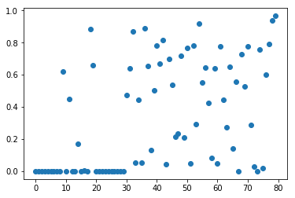
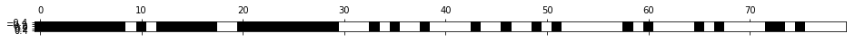
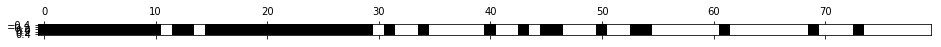
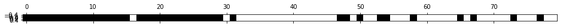
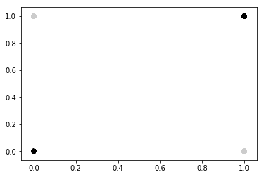

scikit-笔记18:特征选择
Table of Contents
- 1. Automatic Feature Selection
- 1.1. Univariate statistics
- 1.1.1. add noise feature to each sample
- 1.1.2. do feature selection directly by
SelectPercentile - 1.1.3. find best features: do F-test to see informativeness of each feature by
f_classif - 1.1.4. find best features: using
select_percentile_obj.get_support() - 1.1.5. keep only the best features: by
select_percentile_obj.transform(test_data)
- 1.2. Model-based Feature Selection by tree-based model and linear model
- 1.3. Recursive Feature Elimination
- 1.4. The general steps of feature selection for model based and RFE
- 1.1. Univariate statistics
- 2. Exericse
- 3. Misc tools
%matplotlib inline import matplotlib.pyplot as plt import numpy as np
1 Automatic Feature Selection
Often we collected many features that might be related to a supervised prediction task, but we don't know which of them are actually predictive.
To improve interpretability, and sometimes also generalization performance, we can use automatic feature selection to select a subset of the original features.
There are several types of feature selection methods available, which we'll explain in order of increasing complexity.
For a given supervised model, the best feature selection strategy would be to try out each possible subset of the features, and evaluate generalization performance using this subset. However, there are exponentially many subsets of features, so this exhaustive search is generally infeasible. The strategies discussed below can be thought of as proxies for this infeasible computation.
1.1 Univariate statistics
The simplest method to select features is using univariate statistics, that is by looking at each feature individually and running a statistical test to see whether it is related to the target. This kind of test is also known as analysis of variance (ANOVA).
1.1.1 add noise feature to each sample
We create a synthetic dataset that consists of the breast cancer data with an additional 50 completely random features.
from sklearn.datasets import load_breast_cancer, load_digits from sklearn.model_selection import train_test_split cancer = load_breast_cancer() # get deterministic random numbers rng = np.random.RandomState(42) noise = rng.normal(size=(len(cancer.data), 50)) # add noise features to the data # the first 30 features are from the dataset, the next 50 are noise X_w_noise = np.hstack([cancer.data, noise]) #<- add feature to each sample X_train, X_test, y_train, y_test = train_test_split(X_w_noise, cancer.target, random_state=0, test_size=.5)
1.1.2 do feature selection directly by SelectPercentile
We have to define a threshold on the p-value of the statistical test to decide
how many features to keep. There are several strategies implemented in
scikit-learn, a straight-forward one being SelectPercentile, which selects a
percentile of the original features (we select 50% below):
from sklearn.feature_selection import SelectPercentile # use f_classif (the default) and SelectPercentile to select 50% of features: select = SelectPercentile(percentile=50) select.fit(X_train, y_train) # transform training set: X_train_selected = select.transform(X_train) print(X_train.shape) print(X_train_selected.shape)
1.1.3 find best features: do F-test to see informativeness of each feature by f_classif
We can also use the test statistic directly to see how relevant each feature is.
As the breast cancer dataset is a classification task, we use f_classif, the
F-test for classification. Below we plot the p-values associated with each of
the 80 features (30 original features + 50 noise features). Low p-values
indicate informative features.
from sklearn.feature_selection import f_classif, f_regression, chi2
F, p = f_classif(X_train, y_train)
plt.figure()
plt.plot(p, 'o')
[<matplotlib.lines.Line2D at 0x7ff4f6c39a90>]

Clearly most of the first 30 features have very small p-values.
1.1.4 find best features: using select_percentile_obj.get_support()
Going back to the SelectPercentile transformer, we can obtain the features that
are selected using the get_support method:
mask = select.get_support() print(mask) # visualize the mask. black is True, white is False plt.matshow(mask.reshape(1, -1), cmap='gray_r')
<matplotlib.image.AxesImage at 0x7ff4f6b40710>

1.1.5 keep only the best features: by select_percentile_obj.transform(test_data)
Nearly all of the original 30 features were recovered. We can also analize the utility of the feature selection by training a supervised model on the data. It's important to learn the feature selection only on the training set!
from sklearn.linear_model import LogisticRegression # transform test data: X_test_selected = select.transform(X_test) lr = LogisticRegression() lr.fit(X_train, y_train) print("Score with all features: %f" % lr.score(X_test, y_test)) lr.fit(X_train_selected, y_train) print("Score with only selected features: %f" % lr.score(X_test_selected, y_test))
1.2 Model-based Feature Selection by tree-based model and linear model
A somewhat more sophisticated method for feature selection is using a supervised machine learning model and selecting features based on how important they were deemed by the model.
This requires the model to provide some way to rank the features by importance. This can be done for :
- all tree-based models (which implement
get_feature_importances) - all linear models, for which the coefficients can be used to determine how much influence a feature has on the outcome.
Any of these models can be made into a transformer that does feature selection
by wrapping it with the SelectFromModel class:
1.2.1 feature selection by tree-based model as SelectFromModel
from sklearn.feature_selection import SelectFromModel from sklearn.ensemble import RandomForestClassifier select = SelectFromModel(RandomForestClassifier(n_estimators=100, random_state=42), threshold="median")
1.2.1.1 fit and transform
- do fit(train_data) to convert obj to model
- do transform(train_data) to keep only important features and return a new feature_selected dataset
select.fit(X_train, y_train) #<- this select is not the SelectPercentile obj, #but the SelectFromModel obj X_train_rf = select.transform(X_train) #<- feature selection # only keep the important features print(X_train.shape) print(X_train_rf.shape)
1.2.1.2 see the selected status by get_support()
mask = select.get_support() #<- return a boolean ndarray same shape with #original data sample visualize the mask. black is #True, white is False plt.matshow(mask.reshape(1, -1), cmap='gray_r')
<matplotlib.image.AxesImage at 0x7ff4f6c25898>

1.2.1.3 only use selected features of test dataset and check the score
X_test_rf = select.transform(X_test)
LogisticRegression().fit(X_train_rf, y_train).score(X_test_rf, y_test)
0.9508771929824561
This method builds a single model (in this case a random forest) and uses the feature importances from this model. We can do a somewhat more elaborate search by training multiple models on subsets of the data. One particular strategy is recursive feature elimination.
1.3 Recursive Feature Elimination
Recursive feature elimination builds a model on the full set of features, and similar to the method above selects a subset of features that are deemed most important by the model.
However, usually only a single feature is dropped from the dataset, and a new model is built with the remaining features. The process of dropping features and model building is repeated until there are only a pre-specified number of features left:
TODO
- 30 feature -> drop 1 -> 29 feature -> build a new model
- 30 feature -> drop 1 -> 29 feature -> build a new model
1.4 The general steps of feature selection for model based and RFE
Hint:
- here a 'model' means somthing after fitting, 'obj' means somthing before fitting;
- use RFE as example, replace with SelectFromModel freely.
- you can refine the train_data
STEPS:
- build RFE obj:
- Same with using
SelectFromModel, you must pass a model obj(before fitting) as parameter. Here you must pass a model obj toRFE.- And specify the number of feature left by setting
n_features_to_select.- build RFE model:
- RFE_obj.fit(train_data, train_label)
- visualize the selected features:
- RFE_model.get_support() # return you a boolean matrix
- matshow this reshaped(if needed) matrix
- build selected_feature dataset — keep only important features:
- RFE_model.transform(train_data or test_data) ==> return refined dataset
- use selected features to train and test:
- ml_model.fit(refined train_data or test_data)
- evaluate the score of ml model using selected features
- RFE_model.score(refined train_data or test_data, train_label or test_label)
1.4.1 build a RFE model and visualize selected features
from sklearn.feature_selection import RFE select = RFE(RandomForestClassifier(n_estimators=100, random_state=42), n_features_to_select=40) select.fit(X_train, y_train) # visualize the selected features: mask = select.get_support() plt.matshow(mask.reshape(1, -1), cmap='gray_r')
<matplotlib.image.AxesImage at 0x7f1ae8c36828>

1.4.2 build selected_feature dataset and use it to train ml_model
X_train_rfe = select.transform(X_train) X_test_rfe = select.transform(X_test) LogisticRegression().fit(X_train_rfe, y_train).score(X_test_rfe, y_test)
0.9508771929824561
1.4.3 evaluate score
select.score(X_test, y_test)
0.9508771929824561
2 Exericse
EXERCISE: Create the "XOR" dataset as in the first cell below: Add random features to it and compare how univariate selection compares to model based selection using a Random Forest in recovering the original features.
import numpy as np rng = np.random.RandomState(1) # Generate 400 random integers in the range [0, 1] X = rng.randint(0, 2, (200, 2)) y = np.logical_xor(X[:, 0] > 0, X[:, 1] > 0) # XOR creation plt.scatter(X[:, 0], X[:, 1], c=plt.cm.spectral(y.astype(float)))
<matplotlib.collections.PathCollection at 0x7ff4f6b91630>

3 Misc tools
3.0.1 ML models by now
- from sklearn.datasets import make_blobs
- from sklearn.datasets import make_regression
- from sklearn.datasets import load_iris
- from sklearn.datasets import load_digits
- from sklearn.datasets import load_breast_cancer *
- from sklearn.model_selection import train_test_split
- from sklearn.model_selection import cross_val_score
- from sklearn.model_selection import KFold
- from sklearn.model_selection import StratifiedKFold
- from sklearn.model_selection import ShuffleSplit
- from sklearn.model_selection import GridSearchCV
- from sklearn.model_selection import learning_curve
- from sklearn.feature_extraction import DictVectorizer
- from sklearn.feature_extraction.text import CountVectorizer
- from sklearn.feature_extraction.text import TfidfVectorizer
- from sklearn.feature_selection import SelectPercentile *
- from sklearn.feature_selection import f_classif *
- from sklearn.feature_selection import f_regression *
- from sklearn.feature_selection import chi2 *
- from sklearn.feature_selection import SelectFromModel *
- from sklearn.feature_selection import RFE *
- from sklearn.linear_model import LogisticRegression
- from sklearn.linear_model import LinearRegression
- from sklearn.linear_model import Ridge
- from sklearn.linear_model import Lasso
- from sklearn.linear_model import ElasticNet
- from sklearn.neighbors import KNeighborsClassifier
- from sklearn.neighbors import KNeighborsRegressor
- from sklearn.preprocessing import StandardScaler
- from sklearn.decomposition import PCA
- from sklearn.metrics import confusion_matrix, accuracy_score
- from sklearn.metrics import adjusted_rand_score
- from sklearn.metrics.scorer import SCORERS
- from sklearn.metrics import r2_score
- from sklearn.cluster import KMeans
- from sklearn.cluster import KMeans
- from sklearn.cluster import MeanShift
- from sklearn.cluster import DBSCAN # <<< this algorithm has related sources in LIHONGYI's lecture-12
- from sklearn.cluster import AffinityPropagation
- from sklearn.cluster import SpectralClustering
- from sklearn.cluster import Ward
- from sklearn.metrics import confusion_matrix
- from sklearn.metrics import accuracy_score
- from sklearn.metrics import adjusted_rand_score
- from sklearn.metrics import classification_report
- from sklearn.preprocessing import Imputer
- from sklearn.dummy import DummyClassifier
- from sklearn.pipeline import make_pipeline
- from sklearn.svm import LinearSVC
- from sklearn.svm import SVC
- from sklearn.tree import DecisionTreeRegressor
- from sklearn.ensemble import RandomForestClassifier
- from sklearn.ensemble import GradientBoostingRegressor